12 康波中的房地产周期研究
房地产周期和商品周期、技术周期最大的不同：它不同步——每个国家有自己的节奏。但各国节奏的差异不是由本国内部因素独立决定的，它是全球繁荣扩散和传递的结果。房地产周期是康波周期的子周期，在康波内部有它自己的波动规律——这就是本章要解决的问题。
底层逻辑链条：技术创新→主导产业→房地产（增长最核心的载体）。房地产滞后于技术周期，是技术革命的"引致增长"——先有新技术的导入和展开，后有主导产业扩张，然后才有人进城买房、盖楼。这个链条在国家之间按顺序传递：主导国→外围国→追赶国→附属经济体/资源国。各国房地产周期的传递顺序，反过来又决定了大宗商品周期和美元周期的节奏。
国别传递链条的具体对应：
第五次康波：美国=主导国（信息技术革命发起国）→ 英法德=外围国（第一波受扩散影响）→ 中国=追赶国（工业化承接）→ 新加坡、韩国=附属经济体（更外围）。
不同康波中，各国所处的角色会变化；后文将再按第三、第四和第五次康波分别划分。
这个传递链条就是理解各国房地产周期"看似不同步、实则有先后"的钥匙。
核心发现：一个60年的康波里有两个房地产周期——一强一弱（一大一小）。这个规律同时适用于技术周期、房地产周期和大宗商品周期。此外，各类国家之间存在清晰的领先滞后关系，可以用来定位当前各国处于房地产周期的什么位置。
库兹涅茨1930年发现：经济中存在15-25年的长周期波动，在建筑业中尤为明显，因此被称为"建筑业周期"或"房地产周期"。驱动力：居民财产购建 + 人口转移。
以水泥和生铁为例：水泥价格周期33年、产量24年；生铁价格周期20年、产量30年。也就是说，即使是最经典的生产资料，波动周期都在20-33年之间——远超一般的商业周期。

两位经典研究者的结论：霍伊特（芝加哥103年数据）→ 18-20年房地产周期，振幅巨大。哈里森（英美200年数据）→ 同样是18年左右的房地产周期。但请注意——他们用的是名义土地价格，而不是剔除了通胀的实际房价。
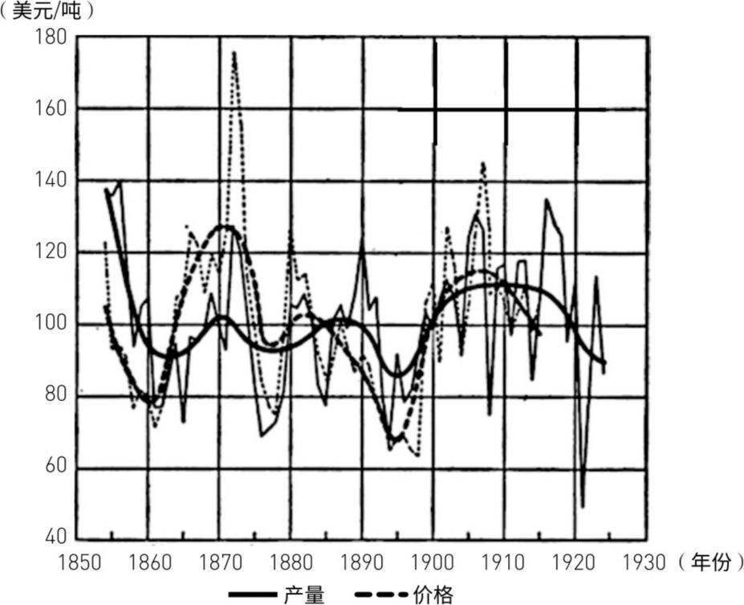
关键区别：库兹涅茨的水泥和生铁数据（20-33年）比霍伊特/哈里森的名义土地价格周期（18年）要长。周金涛团队的重大创新：用实际房价（剔除通胀）取代名义价格，覆盖9个国家、123年数据（1890-2013年）。结论：实际房价周期平均25-30年，一个康波（60年）里套两个——一强一弱。这个发现把房地产周期正式纳入康波框架。
数据来源非常扎实：美国数据→耶鲁大学希勒教授《非理性繁荣》中的1890-2012年实际房价指数；英法→国家统计局；其他国家→国际清算银行（BIS）。物价指数来自各国统计局和圣路易斯联储。
123年、9个国家——这是目前能找到的最完整的全球房地产长周期数据库。研究发现：主导国（美英法）的房地产周期划定了整个周期的基本框架，其他国家跟随其后。
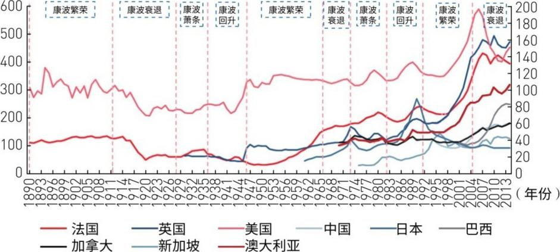
名义房价 vs 实际房价：走势基本一致。唯一的例外是一战期间（1914-1920年）：战时通胀超20%，名义房价涨但实际房价跌。所以用实际房价才能看清真实周期。下文全部使用实际房价。
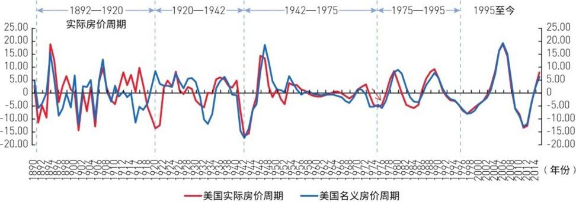
5个房地产周期的明确划分：
① 1892-1920年（28年） — 启动于第三次康波回升/繁荣
② 1920-1942年（22年） — 启动于第三次康波衰退
③ 1942-1975年（33年） — 启动于第四次康波繁荣（二战后黄金期）
④ 1975-1995年（20年） — 启动于第四次康波萧条
⑤ 1995-2025年（预计30年） — 启动于第五次康波繁荣（信息技术革命）。这是报告在2016年重点讨论的当期周期。
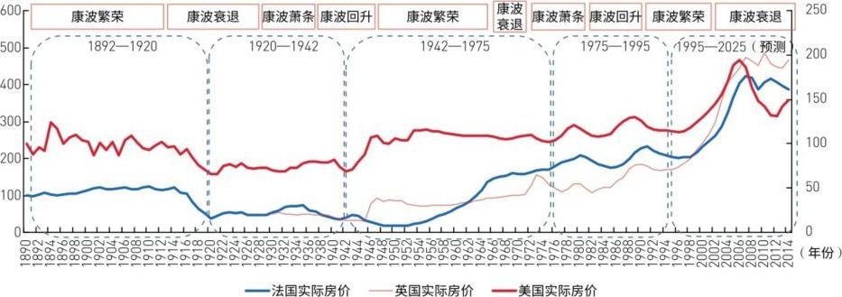
1942-1975年周期中的异常现象：美国1955年就提前见顶了，而英法还在涨——美国上升期明显偏短。原因有二：① 置业人口（25-44岁）在1950-1960年代停滞甚至下降→ 购房需求萎缩；② 货币政策收紧→ 长期利率上升→ 压制房价。人口+货币双杀，使得美国这一轮上行期异常短。
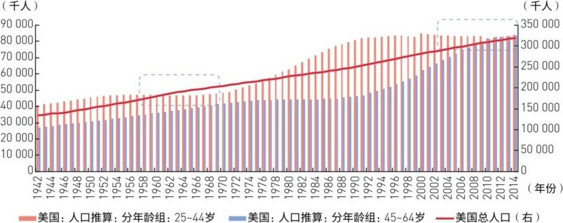
一个有趣的反例：2000年后美国置业人口也是停滞增长，为什么房价反而暴涨？答案：货币政策的差异。1950-1970年代利率一路上升→压制房价。2001年"9·11"+互联网泡沫破灭→美联储大幅降息至40年最低→信贷条件不断放松→即使人口没增长，货币大水照样把房价推到2006年历史顶峰。人口决定长期趋势，但货币政策可以短期大幅干扰。
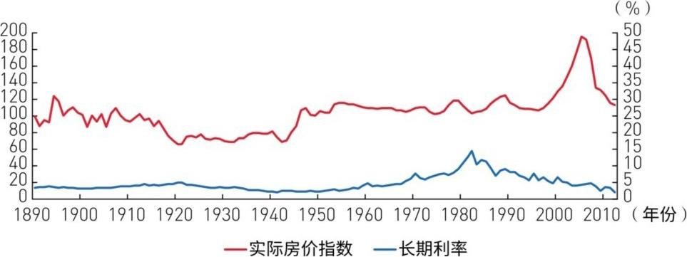
时长统计的关键数字：
平均周期长度：25-26年
上行期平均：8.5年（涨的快）
下行期平均：17年（跌的慢，但时间长——跌的时间是涨的两倍）
意义：一个康波=两个房地产周期（各25年）=50-60年，完全吻合。上行期短、下行期长——这就是为什么房地产"牛短熊长"。
启动的康波阶段决定周期长度：
繁荣/回升期启动 → 31年（周期更长、波动更大）
衰退/萧条期启动 → 21年（周期更短）
本轮（1995年启动于繁荣期）→ 大概率25-30年 → 2020-2025年见终极大底。下一次房地产周期2020-2025年启动于萧条期 → 可能运行到2045-2050年（第六次康波繁荣阶段），时长仅20-25年，且波动性更弱。
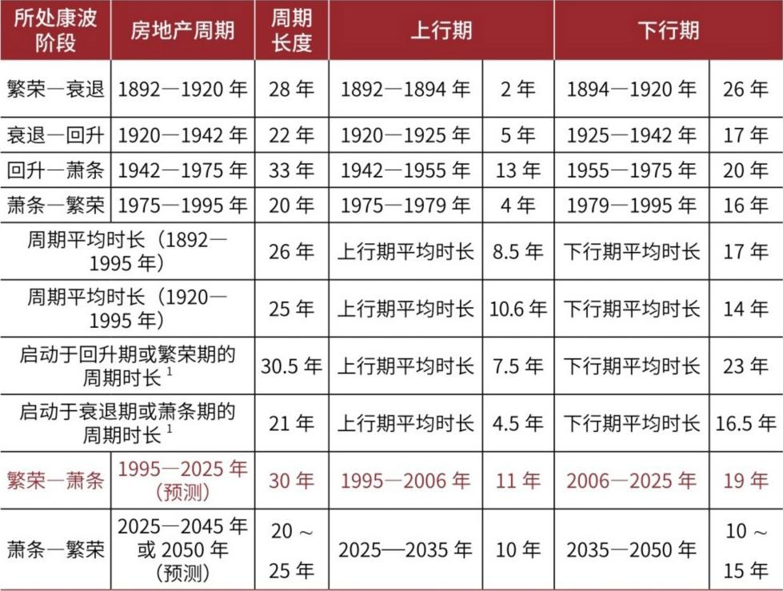
极其重要的性质判断：2012年美国房价反弹 ≠ 新牛市开始，而是大下行期中的B浪反弹（技术性反弹）。逻辑：本轮1995年启动→2006年A浪见顶→跌到2012年→2012-2016年为B浪反弹→2017-2019年进入C浪下跌→2020-2025年终极大底。把反弹当牛市，会犯战略性错误。
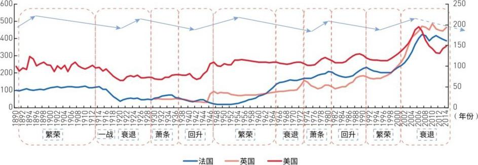
强周期 vs 弱周期——数据一目了然：
强周期（启动于繁荣/回升期）：涨49.4%、跌29.2%
弱周期（启动于衰退/萧条期）：涨23.3%、跌12.9%
涨跌幅差距约一倍。识别强弱周期，不仅对房地产投资至关重要，还能和商品周期、中周期互相印证。
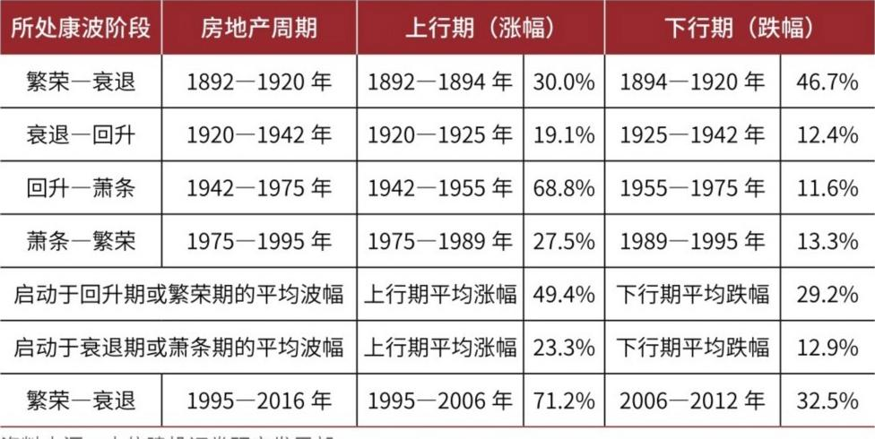
强弱周期的底层逻辑：
繁荣/回升期 → 新技术加速扩散 → 主导产业爆发 → 产业链跨国联动 → 三大效应叠加：
① 产业人口涌入：新行业创造大量就业→人口聚集→置业需求猛增
② 收入水平提高：新兴产业高收入→购买力上升→换房/改善需求
③ 投机资本涌入：产业资本富余→转化为金融资本→涌入房地产→推波助澜
三重叠加 = 强周期的大涨大跌。衰退/萧条期这三种力量都弱 → 弱周期。
本轮是强周期——数据验证：美国1995-2006年涨71.2%（远超强周期平均49.4%），2006-2012年跌32.5%（也超过强周期平均29.2%）。
下一次（2020-2025年启动）将是弱周期——启动于萧条期，涨跌幅都会收敛。这意味着2025年后买房的"暴利"时代过去了，不要用本轮强周期的经验去线性外推下一轮。
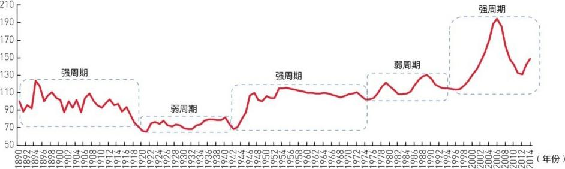
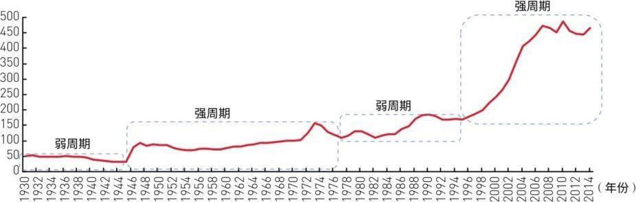
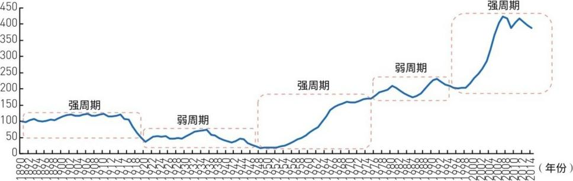
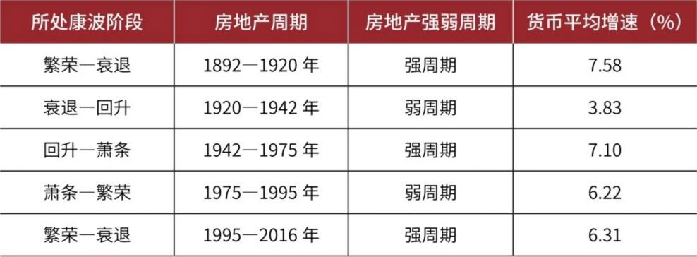
回顾第11章的发现：一个康波（50-60年）里套两个商品产能周期（各25-30年）。这个节奏和房地产周期高度一致——两者都是康波内部的"双周期"结构。
房地产→商品的传导逻辑：房地产是"现实增长的最核心载体"——有人买房盖楼→需要钢筋水泥有色金属→矿山和钢厂扩产→产能周期启动。房地产周期是商品产能周期的"发动机"。尤其对中国（追赶国）和新加坡（附属经济体），房地产投资直接拉动工业投资和GDP增长，是主导产业部门。
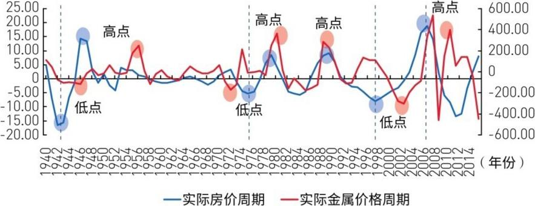
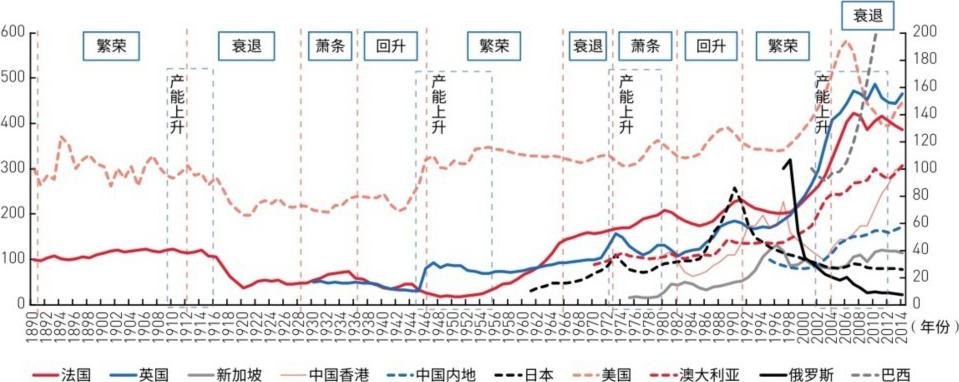
两轮周期的启动点对照——精确的数字关系：
1942年房地产启动 → 1945年产能启动（领先3年）
1975年房地产启动 → 1972年产能略微领先（反常，可能受石油危机干扰）
1995年房地产启动 → 2002年产能启动（领先7年，中间经历了亚洲金融危机和互联网泡沫）
规律：房地产领先产能3-7年。下一轮预测：2020-2025年房地产启动（弱周期）→ 2030年产能启动（领先可能拉长到5-10年，因为萧条期传导更慢）。
城市化是房地产周期的核心推动力：
美国：1950-1960年城市化率 60%→70%，只用了10年——这是战后房地产强周期的根基
日本：1967-1982年城市化率 50%→60%，用了15年——支撑了日本房地产黄金期
中国：2000-2010年城市化率 35%→50%，只用了10年——速度惊人，解释了本轮中国房地产强周期
规律：城市化快速推进的阶段=房地产周期的上行期。当城市化率减速，房地产的动力也随之衰减。
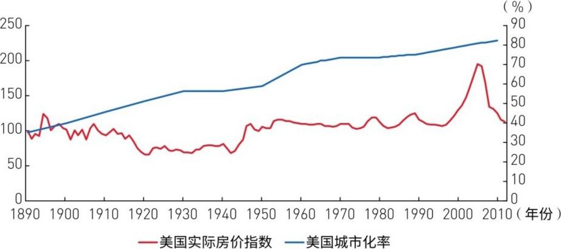
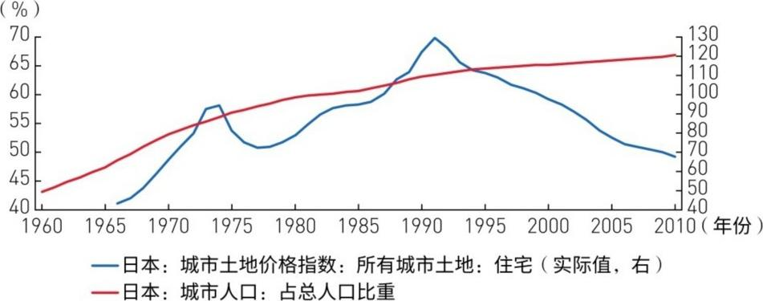
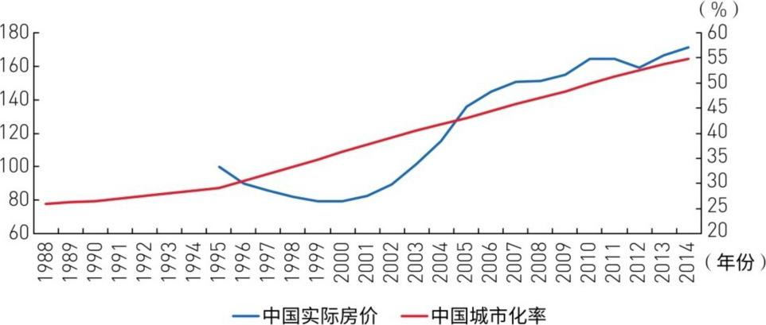
房地产周期（25年级）内部嵌套中周期（9-10年级朱格拉周期）：一个房地产下行期（约17年）里大约经历两个中周期。中周期的节奏塑造了房地产周期内部的上行→回调→反弹→再下行的"短节奏"。
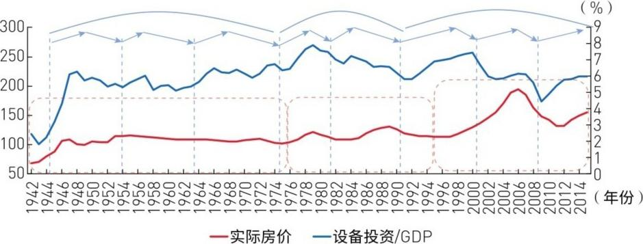
中周期与房地产周期的互动——五条规律，精确到年：
① 中周期上行=房价反弹，中周期下行=房价回落/下跌
② 房价终极大底出现在中周期低点附近或之后
③ 本轮对应：2009年中周期启动→2012年房价B浪反弹，与这一周期框架相符
④ 2015年中周期见顶→2017-2019年房价进入C浪下跌
⑤ 2019-2020年中周期见底→房价2020-2025年见终极大底
这就是中周期给房地产周期"校对时钟"的机制——用9-10年的朱格拉周期来校准25年房地产周期内部的B浪和C浪。
全球房地产周期像波浪一样传递：主导国→外围国→追赶国→附属经济体/资源国。每一波都有先后，不会同时涨同时跌。这个传递顺序是判断每个国家当前处于什么位置的核心工具。
各国在康波中的"角色卡"——逐次迭代：
第三次康波：英国=主导国，美国/法国=外围国
第四次康波：美国=主导国（取代英国），英国=外围国（降级），日本/澳大利亚/加拿大=追赶国，新加坡=附属经济体
第五次康波：美国=主导国（不变），英法=外围国，日本从追赶国降为外围国（创新力下降），澳大利亚/加拿大=资源国+外围国双重属性，中国=典型的追赶国（工业化+城市化高速推进），巴西=资源国，新加坡=附属经济体（待确认）
国家和人一样，在康波的不同阶段会"晋级"或"降级"。
第四次康波传递数据：
第一轮（1942-1975年）：美国领先英法触底1-6年，领先英国见顶18年（美国1955年见顶vs英国1973年）——这个极端领先是因为美国置业人口停滞+利率上升压制了上行
第二轮（1975-1995年）：美国领先英国2年触底，领先追赶国（日/澳/加）2-10年触底，见顶领先1年左右
主导国始终领先，但时间差不是固定的——取决于各国工业化阶段和货币政策。且追赶国越"远"，滞后越长。
第五次康波（本轮）传递数据——最关键的一段：
美国1995年启动 → 领先法国/澳/加 1-3年 → 领先中国5年
美国2006年见顶 → 领先英法 1年
关键推算：美国见顶滞后于附属经济体7-9年（第四次康波经验）。中国在第五次康波中领先附属经济体，而美国2006年见顶已有10年 → 中国2014/2016年=双头顶部，上行期已接近极限。2017-2018年大概率进入下行。
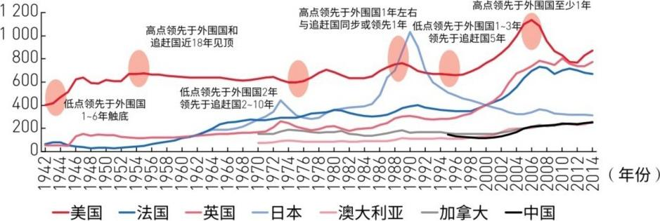
传递关系确定存在，但时间差不是固定不变的。主导国领先追赶国的时长在不同康波中不同，这可能与各国工业化的启动时间和推进速度有关。因此，历史上的领先年数只能作为参照，不能机械套用。
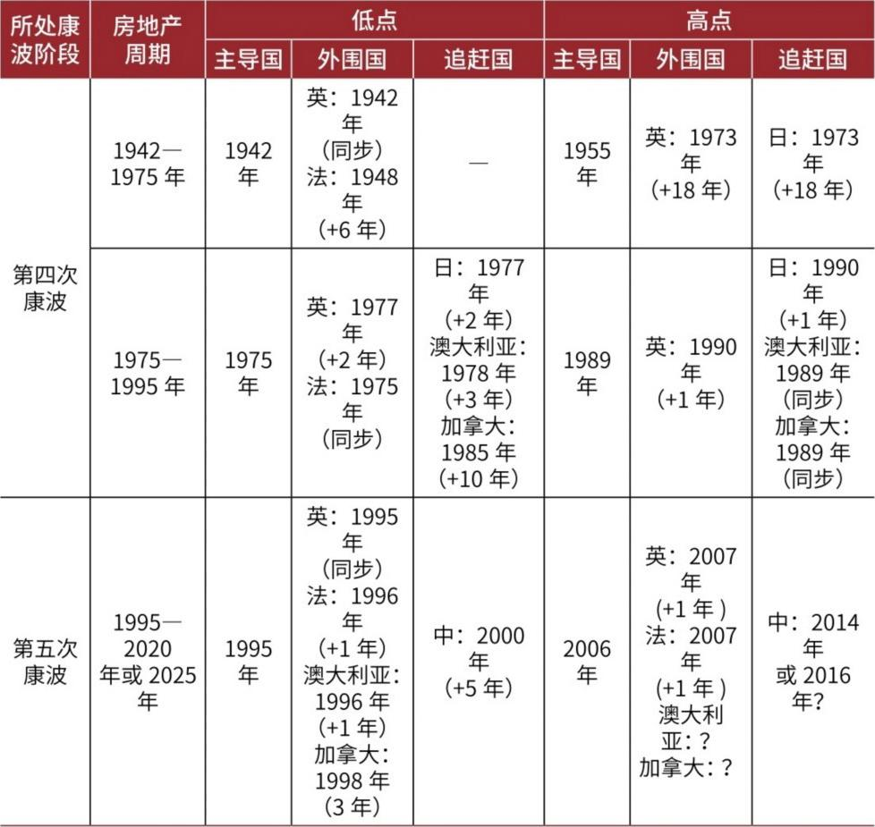
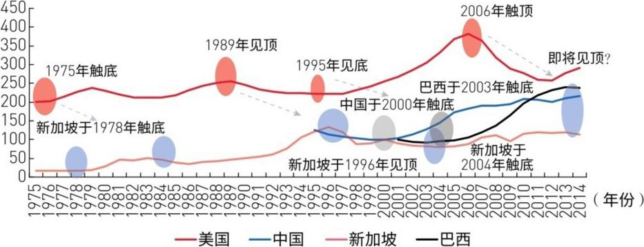
附属经济体和资源国的滞后——"最后的接力棒"：
美国领先附属经济体7-9年见顶。美国2006年见顶+10年=2016年→中国上行极限。中国领先新加坡/巴西3-5年：中国2000年启动→新加坡2004年触底、巴西2003年触底。
接力顺序：美国（1995启动→2006见顶）→ 中国（2000启动→2014/2016双头→2017-2019下行）→ 新加坡/巴西（2003-2004启动→还在进行中）。
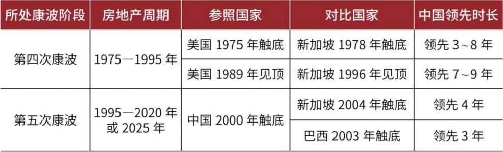
全部证据串联——推导2017-2019年C浪下跌的完整逻辑链：
① 本轮25-30年，1995年启动→2006年A浪顶→跌到2012→B浪反弹→2017-2019年C浪下跌
② 中周期2009年启动→2015年见顶→2019-2020年见底→中周期低点之前=房价下行
③ 房地产终极大底滞后于中周期低点→2020-2025年见终极大底
④ 康波2016年处于衰退→萧条转换→2018-2019年是关键节点
四条线索交叉验证，结论一致。
这段提供了一项历史参照：在第四次康波中，美国房地产周期领先附属经济体新加坡7-9年。作者随后用这一领先关系推测第五次康波中追赶国和附属经济体可能处于什么阶段。
本章最核心的预测——"双杀"预警：
2017-2019年，中美两大经济体的房地产周期将同时进入下行阶段——C浪共振下跌。
作者认为，如果中美两个大型经济体的房地产同时下行，冲击可能通过投资、信用和需求传导到全球经济。再叠加康波从衰退向萧条转换，这种共振可能成为加快经济下行的重要风险。
需要注意：这是报告在2016年基于周期模型作出的预测，不是对后来实际走势的复盘结论。
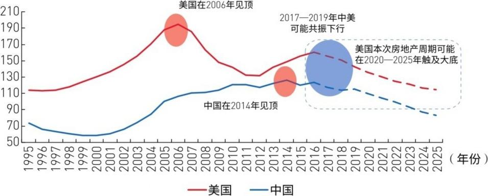